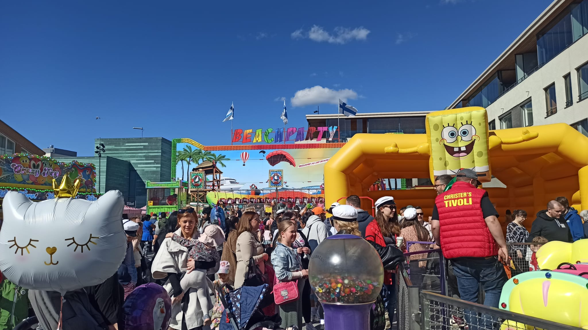

Visit Finland
and
Travel with us
Finland has four different seasons and we offer season-wise tour plans

Summer Season
During Summer time Finland has on average temperature of +20 degrees. May to August are considered summer season in Finland.
Autumn Season
September and October are considered as Autumn in Finland when the country becomes colorful as trees and leaves continue changing colors.
Winter Season
November to February is considered as winter season in Finland when the country's temperature may go down as -30 to -40 in some parts.
Spring Season
March and April are considered as spring in Finland when cherry blossoms throughout the country. This is time when also snow starts melting.